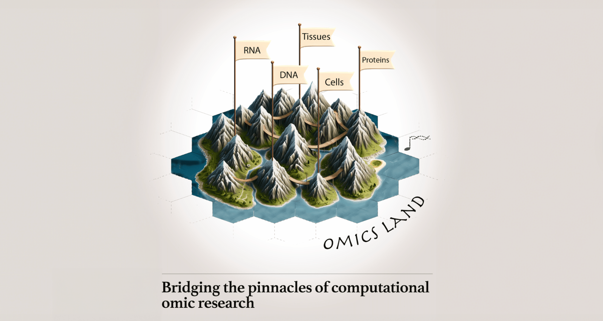
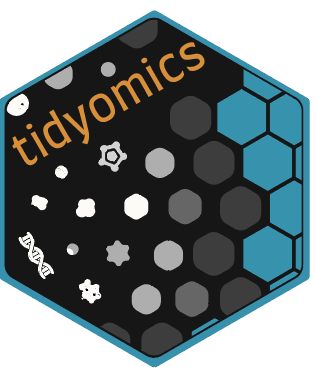
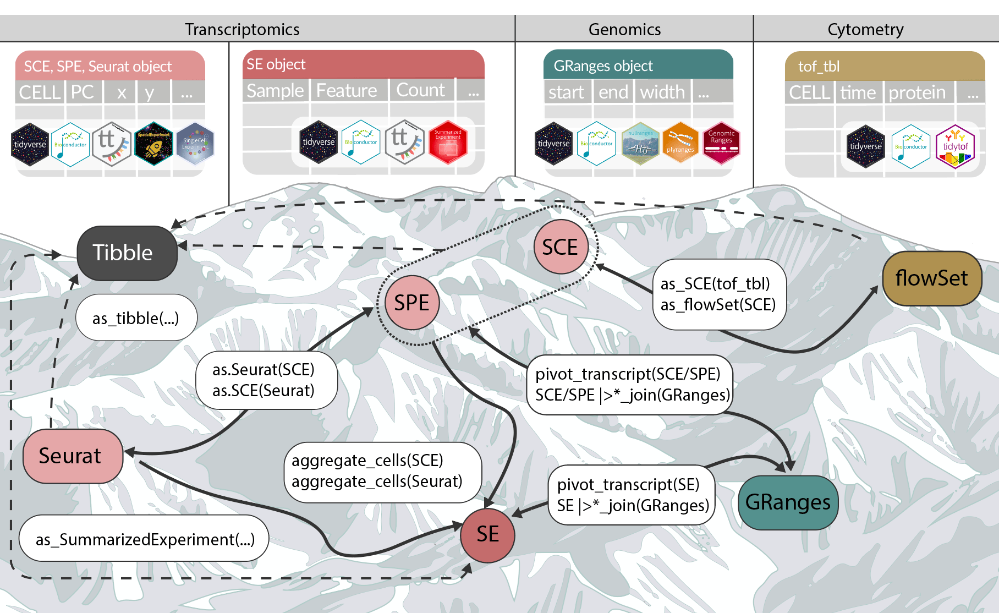

# BiocManager::install("tidyomics")
library(tidyomics) 
Introduction
The tidyomics ecosystem was born from a common challenge faced by life-scientists: omics technologies and frameworks in R often require specialised data structures and syntax. Switching from bulk RNA-seq to single-cell, or from expression data to genomic ranges, often felt climbing a different mountain. Tidyomics keeps the underlying objects exactly the same while giving them a single, tidyverse-flavoured grammar and data display making moving from bulk RNA-seq to single-cell or spatial data seamless. Its design principles take inspiration from the tidyverse philosophy of clear, human-readable code as articulated by Wickham et al. (2019) (JOSS 10.21105/joss.01686).
This initiative snowballed into an international collaboration—and ultimately into tidyomics (Nat. Methods 2024). Thanks to support from the Chan Zuckerberg Initiative’s Essential Open Source Software for Science (EOSS) Cycle 6 program, we are actively improving tidyomics through performance optimization, enhanced documentation, and ecosystem expansion to better serve the biomedical research community.
What is Tidyomics?

tidyomics is an open project to develop and integrate software and documentation to enable a tidy data analysis framework for omics data objects (Hutchison et al. 2024). The development of packages and tutorials is organized around tidyomics open challenges. Tidyomics enables the use of familiar tidyverse verbs (select, filter, mutate, etc.) to manipulate rich data objects in the Bioconductor ecosystem. Importantly, while the data objects are not modified, tidyomics provides a tidy interface to work on the native objects, leveraging existing Bioconductor classes and algorithms.
tidyomics is a set of R packages by an international group of developers. The ecosystem allows for code such as:
single_cell_data |>
filter(Phase == "G1") |>
ggplot(aes(UMAP_1, UMAP_2, color=score)) +
geom_point()(filter single cells in G1 phase and plot UMAP coordinates)
or
chip_seq_peaks |>
filter(FDR < 0.01) |>
join_overlap_inner(promoters) |>
group_by(promoter_type) |>
summarize(ave_score = mean(score))(compute average score by the type of promoter overlap for significant peaks)
At the same time, data containers can be abstracted as flat tibbles, closing the loop, and allowing the user extended visibility and operability of data.
For example, the airway dataset.
From the standard summarised representation
library(airway)
data(airway)
airwayclass: RangedSummarizedExperiment
dim: 63677 8
metadata(1): ''
assays(1): counts
rownames(63677): ENSG00000000003 ENSG00000000005 ... ENSG00000273492
ENSG00000273493
rowData names(10): gene_id gene_name ... seq_coord_system symbol
colnames(8): SRR1039508 SRR1039509 ... SRR1039520 SRR1039521
colData names(9): SampleName cell ... Sample BioSampleLoading tidyprint (available from the 3.22 Bioconductor release), the SummarizedExperimenrt is abstracted to a richer flat representation, without altering its internal properties or structure.
library(tidyprint)
airway# A SummarizedExperiment-tibble abstraction: Features=63677 | Samples=8 | Assays=counts
# |----------------- COVARIATES ---------------|
.feature .sample | counts | SampleName cell dex albut Run avgLength
<chr> <chr> | <chr> | <fct> <fct> <fct> <fct> <fct> <chr>
1 ENSG0000… SRR103… | 679 | GSM1275862 N613… untrt untrt SRR1… 126
2 ENSG0000… SRR103… | 0 | GSM1275862 N613… untrt untrt SRR1… 126
3 ENSG0000… SRR103… | 467 | GSM1275862 N613… untrt untrt SRR1… 126
4 ENSG0000… SRR103… | 260 | GSM1275862 N613… untrt untrt SRR1… 126
5 ENSG0000… SRR103… | 60 | GSM1275862 N613… untrt untrt SRR1… 126
-------- ------- - ------ - ---------- ---- --- ----- --- ---------
509412 ENSG0000… SRR103… | 0 | GSM1275875 N061… trt untrt SRR1… 98
509413 ENSG0000… SRR103… | 0 | GSM1275875 N061… trt untrt SRR1… 98
509414 ENSG0000… SRR103… | 0 | GSM1275875 N061… trt untrt SRR1… 98
509415 ENSG0000… SRR103… | 0 | GSM1275875 N061… trt untrt SRR1… 98
509416 ENSG0000… SRR103… | 0 | GSM1275875 N061… trt untrt SRR1… 98
# ℹ 14 more variables: Experiment <fct>, Sample <fct>, BioSample <fct>,
# `|` <|>, gene_id <chr>, gene_name <chr>, entrezid <chr>,
# gene_biotype <chr>, gene_seq_start <chr>, gene_seq_end <chr>,
# seq_name <chr>, seq_strand <chr>, seq_coord_system <chr>, symbol <chr>Core Principles
The tidyomics ecosystem is built on several fundamental principles:
- Tidy interface to native objects: Provides tidy verbs while preserving Bioconductor object structure
- Verbose, jargon-free vocabulary: Function and variable names are designed to be self-explanatory
- Minimal temporary variables: Reduce the need for intermediate variables through chaining operations
- Consistent interfaces: Provide uniform interfaces across different data containers
- Compatibility: Work seamlessly with existing Bioconductor and tidyverse workflows
Omics Integration Under a Unique Consistent Interface
The tidyomics ecosystem provides a unified approach to omics data analysis, enabling seamless integration across different omics domains through a consistent tidy interface.

This integration allows researchers to work with transcriptomics, genomics, and other omics data using the same familiar tidyverse verbs, regardless of the underlying data structure.
Core Packages
Before diving into the individual packages you can simply load the meta-package and immediately gain access to all tidyomics functionality:
With a single call you have a tidy interface ready for spatial, single-cell, bulk, and genomic range data.
Utility packages
tidyprint
tidyprint (available from the 3.22 Bioconductor release) offers a consistent, user-friendly print method for Bioconductor objects such as SummarizedExperiment. It flattens the display of complex S4 objects into tidy tibbles for straightforward inspection, summarization, and reporting—without modifying the underlying data. This approach makes it easy to explore and understand your data at a glance using familiar tidyverse conventions.
Transcriptomics Packages
Bulk RNA-seq analyses, for example, are traditionally scattered across disjoint data frames, objects and helper lists. tidySummarizedExperiment re-imagines a SummarizedExperiment through a tibble-like interface: you can filter(), mutate() and group_by() genes or samples exactly as you do with any tidyverse data frame. For single-cell data the same philosophy inspired tidySingleCellExperiment, while for users of the Seurat workflow we created tidyseurat, a drop-in tidy wrapper that makes transitioning between Bioconductor and Seurat frameworks seamless.
tidySummarizedExperiment
The tidy interface for SummarizedExperiment objects, enabling tidyverse operations on bulk RNA-seq data.
tidySingleCellExperiment
Single-cell experiments are highly dimensional. tidySingleCellExperiment flattens this complexity so you can focus on the biology instead of the bookkeeping.
tidyseurat
For Seurat users, tidyseurat adds the missing tidyverse layer without forcing you to abandon familiar Seurat functions.
tidySpatialExperiment
Spatial transcriptomics combines gene expression with tissue spatial coordinates. tidySpatialExperiment brings the tidy philosophy to SpatialExperiment objects so you can transform, visualise and gate spatial spots with the same verbs you already use for bulk and single-cell data.
Genomics Packages
Genomic ranges represent locations along chromosomes—think of them as the geographical coordinates of the genome. With traditional Bioconductor tools, even simple tasks such as “take promoters and find overlaps with ATAC-seq peaks” require specialised syntax. The tidy answer is plyranges, a grammar that lets you manipulate GRanges with the fluency of dplyr verbs. And because biology is three-dimensional, the sister package plyinteractions brings the same elegance to chromatin-interaction data.
plyranges
A tidy interface for genomic ranges data, providing a grammar of genomic data manipulation.
plyinteractions
A tidy interface for genomic interaction data, enabling analysis of chromatin interactions.
Analysis Packages (non-core packages)
The core adapters above focus on data representation; the packages below provide high-level analysis grammars that build on those tidy foundations.
tidybulk
A tidy framework for modular transcriptomic data analysis, tidybulk streamlines bulk RNA-seq workflows by integrating differential expression, batch correction, and gene set enrichment into a consistent, pipe-friendly grammar. It enables users to perform complex analyses with simple, readable code, leveraging tidyverse principles for reproducibility and clarity.
nullranges
A tidy interface for statistical null range generation and overlap analysis in genomics. nullranges enables users to create matched sets of genomic ranges for robust enrichment testing, supporting reproducible and flexible workflows for tasks such as permutation-based significance assessment and background modeling.
Publications
Hutchison W.J., Keyes T.J., et al. (2024). “The tidyomics ecosystem: enhancing omic data analyses.” Nature Methods 21, 1166–1170. DOI 10.1038/s41592-024-02299-2
This community paper introduces tidyomics and demonstrates its scalability on 7.5 million PBMCs from the Human Cell Atlas.
Transcriptomics
- Mangiola S., Molania R., Dong R., Doyle M.A. & Papenfuss A.T. (2021). “tidybulk: a tidy framework for modular transcriptomic data analysis.” Genome Biology 22, 42. DOI 10.1186/s13059-020-02233-7
- Mangiola S., Doyle M.A. & Papenfuss A.T. (2021). “Interfacing Seurat with the R tidy universe.” Bioinformatics 37(22), 4100–4103. DOI 10.1093/bioinformatics/btab404
Genomics
- Lee S., Cook D. & Lawrence M. (2019). “plyranges: a grammar of genomic data transformation.” Genome Biology 20, 4. DOI 10.1186/s13059-018-1597-8
- Davis E.S., Mu W., Lee S., Dozmorov M.G., Love M.I. & Phanstiel D.H. (2023). “matchRanges: Generating null hypothesis genomic ranges via covariate-matched sampling.” Bioinformatics. DOI 10.1093/bioinformatics/btad197
Community
Tidyomics is more than code — it is a lively community of developers, users and code-curators who collaborate across academic labs, core facilities and industry groups on five continents. Developers extend the toolbox, users pressure-test new ideas on real datasets, and curators keep documentation and tutorials clear and current. No matter whether you write R every day or are about to analyse your first sequencing experiment, you’ll find mentors ready to help — and eager to learn from your perspective.
Getting Involved
Contributing
The tidyomics ecosystem welcomes contributions from the community. You can contribute by:
- Reporting Issues: Use the GitHub issue trackers for each package. Open or search issues in the relevant repository: https://github.com/tidyomics
- Submitting ideas: Contribute code improvements or new features https://github.com/orgs/tidyomics/projects/1
- Improving Documentation: Help make the ecosystem more accessible
- Creating Tutorials: Share your knowledge with the community!
Communication Channels
- tidyomics open challenges – start or join a thread in any tidyomics repository: https://github.com/orgs/tidyomics/projects/1
- Bioconductor Support Forum – tag your post with tidyomics: https://support.bioconductor.org
- Zulip Chat – drop by the
#tidiness_in_biocstream for real-time discussion: https://community-bioc.zulipchat.com/#narrow/channel/507542-tidiness_in_bioc
Transcriptomics Example
library(tidyverse)
library(tidybulk)
library(tidySummarizedExperiment)
data(airway, package = "airway")
airway |>
keep_abundant(factor_of_interest = dex) |>
scale_abundance() |>
test_differential_abundance(~ dex) |>
filter(abundant) |>
arrange(desc(abs(logFC)))Genomics Example
library(plyranges)
library(tidyverse)
Example workflow (requires genomic data)
granges |>
filter(score > 10) |>
join_overlap_inner(promoters) |>
group_by(gene_id) |>
summarize(mean_score = mean(score))Single-Cell Example
library(tidySingleCellExperiment)
library(tidyverse)
sce |>
filter(Phase == "G1") |>
ggplot(aes(UMAP_1, UMAP_2, color=score)) +
geom_point()Future Directions
Planned Developments
- Enhanced Single-Cell Support: Expanded analysis capabilities for single-cell data
- Proteomics Integration: Support for proteomic data analysis
- Education: More comprehensive educational materials
- Reproducibility: Allow to track object manipulation history with
tidyomicslog
Community Goals
- Increased Adoption: Broader adoption in the bioinformatics community
- Educational Integration: Integration into more university curricula
- Industry Applications: Adoption in pharmaceutical and biotech industries
- International Collaboration: Expansion of the global community
To conclude..
The tidyomics ecosystem represents a significant advancement in omics data analysis, providing a consistent, intuitive, and powerful framework for biological data analysis across multiple domains including transcriptomics and genomics. By bringing the principles of tidy data to omics, the ecosystem makes complex biological analyses more accessible, reproducible, and enjoyable.
Whether you’re a seasoned bioinformatician working with transcriptomics or genomics data, or just starting your journey in omics analysis, the tidyomics ecosystem provides the tools and resources you need to analyze your data effectively and efficiently.
The ecosystem continues to grow with new packages and capabilities being developed through the tidyomics open challenges, ensuring that the community drives the development of tools that meet real-world needs.
Join the community, contribute to the ecosystem, and help shape the future of tidy omics!
For more information, visit the tidyomics GitHub organization or follow us on Zulip.
© 2025 tidyomics. Content is published under Creative Commons CC-BY-4.0 License for the text and BSD 3-Clause License for any code. | R-Bloggers